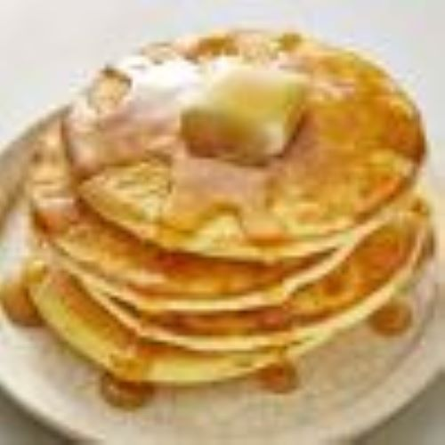

Ingredients
- 1 cup all-purpose flour
- 2 tablespoons sugar
- 1 tablespoon baking powder
- 1/2 teaspoon salt
- 1 cup milk
- 1 egg
- 2 tablespoons melted butter
Instructions
- In a bowl, combine the flour, sugar, baking powder, and salt.
- In another bowl, whisk together the milk, egg, and melted butter.
- Pour the wet ingredients into the dry ingredients and stir until just combined.
- Heat a non-stick skillet over medium heat.
- Pour 1/4 cup of batter for each pancake.
- Cook until bubbles form on the surface, then flip and cook until golden brown.
- Serve warm with your favorite toppings!
Watch the Video
Delicious Pancakes
Enjoy Your Pancakes!

Links for More Recipes